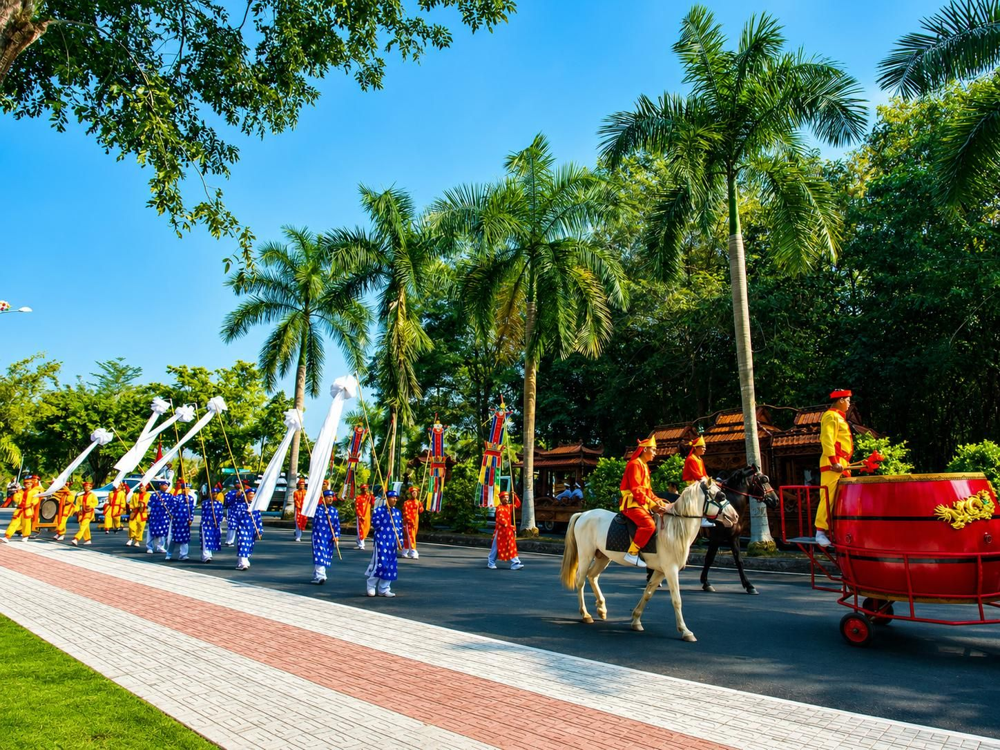
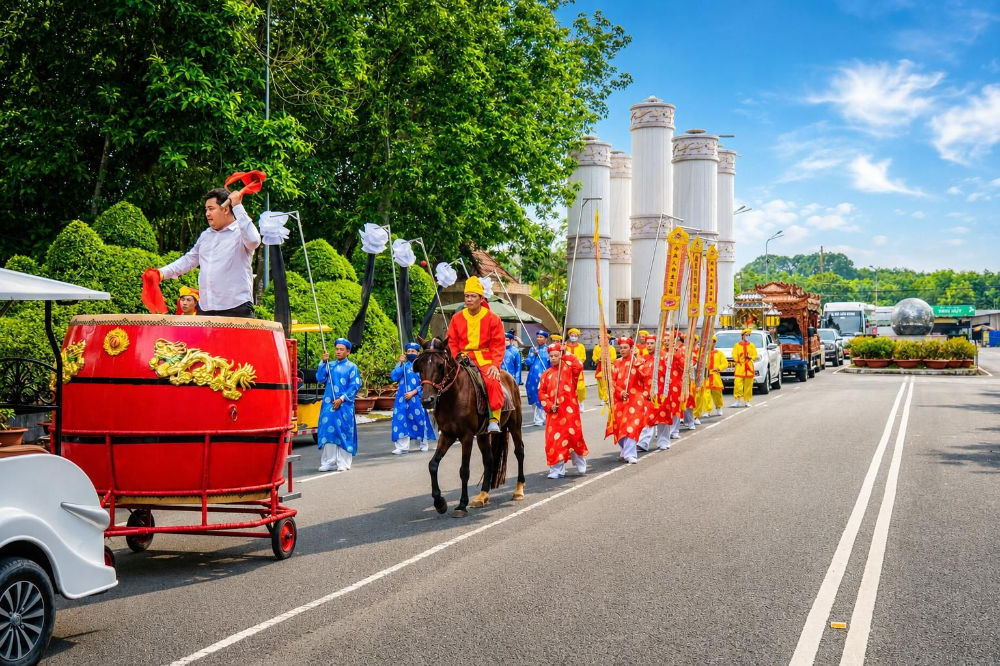
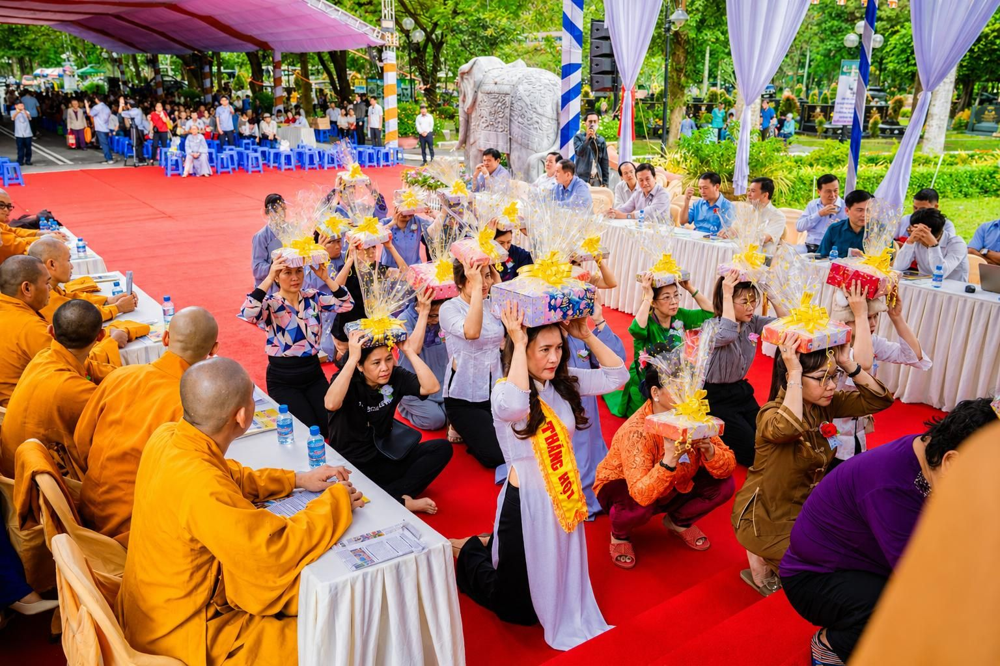
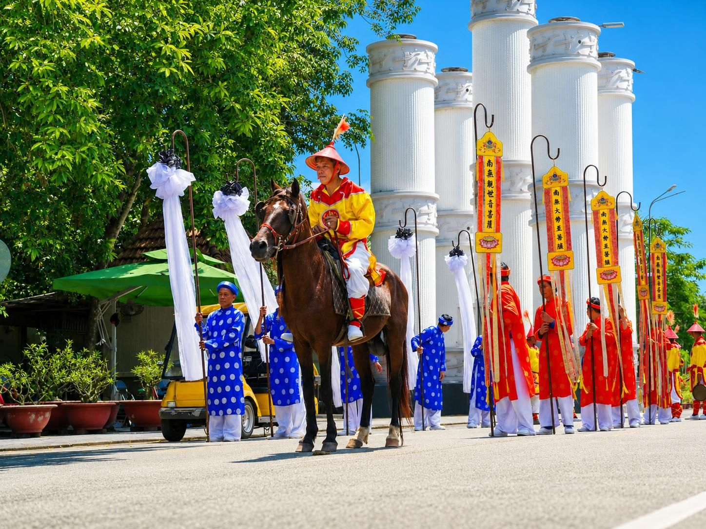

Dịch vụ tang lễ
Tận tâm trong từng nghi thức
Gói dịch vụ trọn gói
Lo liệu tang lễ là việc hệ trọng và nhạy cảm. Dù là chuẩn bị trước hay khi hữu sự, việc biết bắt đầu từ đâu và quyết định những gì cần làm có thể khiến nhiều người bối rối, nhất là với những ai chưa từng trực tiếp sắp xếp các nghi thức cần thiết. Với bề dày kinh nghiệm trong lĩnh vực dịch vụ tang lễ, Hoa Viên Bình Dương thấu hiểu sâu sắc nỗi trăn trở này.
Đọc thêm
Gia đình được hướng dẫn lựa chọn các hạng mục cần thiết theo tín ngưỡng, phong tục, quy mô lễ tang và ngân sách dự kiến. Mỗi phương án được trao đổi rõ ràng trước khi thực hiện để hạn chế những quyết định vội vàng trong lúc tang gia bối rối.
Đội ngũ phụ trách phối hợp xuyên suốt từ tiếp nhận, khâm liệm, nhập quan, chuẩn bị lễ viếng đến di quan, an táng hoặc hỏa táng, giúp gia đình có thêm thời gian ở bên nhau và tưởng nhớ người đã khuất.
Gói dịch vụ gồm
- Tư vấn nghi thức & phương án tổ chức
- Khâm liệm & nhập quan
- Chuẩn bị lễ viếng & bàn thờ
- Tang phục & nhạc lễ
- Xe tang & điều phối di quan
- Rạp, bàn ghế & dịch vụ hỗ trợ

Quy trình thực hiện
Đội ngũ Hoa Viên phối hợp cùng gia đình chuẩn bị bốn nghi thức chính một cách trang nghiêm, phù hợp với phong tục, tín ngưỡng và nguyện vọng đã thống nhất.
- 1Khâm liệm
Chuẩn bị chu đáo cho người đã khuất và các vật dụng cần thiết theo nội dung gia đình đã thống nhất.
- 2Nhập quan
Thực hiện nghi thức nhập quan trang nghiêm, tôn trọng phong tục, tôn giáo và nguyện vọng của gia đình.
- 3Lễ viếng
Chuẩn bị bàn thờ, không gian lễ viếng, tang phục và nhạc lễ để gia đình, thân hữu cùng tưởng niệm.
- 4Di quan
Điều phối xe tang và đoàn đưa tiễn đến nơi an táng hoặc hỏa táng theo phương án gia đình đã lựa chọn.
Không gian nghi lễ & tưởng niệm
Hoa Viên Bình Dương tổ chức và hỗ trợ các nghi lễ tưởng niệm trong không gian trang nghiêm, hài hòa với cảnh quan xanh. Từng khu vực được chuẩn bị chỉn chu để gia đình, thân hữu cùng tiễn biệt người đã khuất theo tín ngưỡng và nguyện vọng đã thống nhất.



Không gian và hình thức nghi lễ được tư vấn theo nhu cầu thực tế của từng gia đình.

Vật dụng tang lễ
Hoa Viên Bình Dương không vận hành danh mục quan tài hoặc bình tro cốt cố định. Khi gia đình có nhu cầu, đội ngũ sẽ tư vấn tiêu chí lựa chọn và phối hợp với đơn vị cung cấp phù hợp.
- Phù hợp với hình thức an táng hoặc hỏa táng
- Tôn trọng tín ngưỡng và nghi thức của gia đình
- Trao đổi rõ mẫu, chất liệu và chi phí dự kiến
- Phối hợp giao nhận theo thời gian tổ chức
Mẫu mã, chất liệu, kích thước, chi phí và khả năng cung ứng được xác nhận theo từng trường hợp trước khi gia đình quyết định.
Trao đổi nhu cầu6 lý do để gia đình an tâm lựa chọn Hoa Viên Bình Dương
- 01Tiếp nhận và tư vấn kịp thời khi gia đình cần
Đầu mối hỗ trợ tiếp nhận thông tin, giải thích các bước cần thực hiện và giúp gia đình xác định những việc ưu tiên trong thời gian đầu.
- 02Phối hợp trọn gói từ khâm liệm đến di quan
Các hạng mục được phối hợp theo một kế hoạch thống nhất, hạn chế việc gia đình phải tự liên hệ nhiều đơn vị trong lúc bối rối.
- 03Nghi thức phù hợp phong tục, tôn giáo và nguyện vọng
Mỗi tang lễ được trao đổi kỹ về tín ngưỡng, tập quán gia đình và mong muốn của người đã khuất để tổ chức trang nghiêm, phù hợp.
- 04Đội ngũ có kinh nghiệm, phục vụ tận tâm và chỉn chu
Nhân sự phụ trách từng công đoạn được phân công rõ ràng, giữ thái độ điềm tĩnh, tôn trọng và hỗ trợ gia đình xuyên suốt buổi lễ.
- 05Không gian và phương tiện phục vụ trang nghiêm
Không gian tổ chức, phương tiện vận chuyển và các vật dụng nghi lễ được chuẩn bị đồng bộ theo phương án đã thống nhất.
- 06Hạng mục được trao đổi rõ ràng trước khi thực hiện
Phạm vi công việc, lựa chọn sản phẩm và chi phí dự kiến được xác nhận rõ để gia đình chủ động cân nhắc và kiểm soát ngân sách.
Sau tang lễ, gia đình chọn hình thức nào?
Hoa Viên Bình Dương tư vấn giải pháp phù hợp với nhu cầu, tín ngưỡng và điều kiện của từng gia đình. Mọi hạng mục sẽ được trao đổi rõ ràng trước khi thực hiện.

Cẩm nang chọn đơn vị dịch vụ tang lễ
Lựa chọn đơn vị dịch vụ tang lễ phù hợp giúp gia đình được hướng dẫn rõ ràng và giảm bớt áp lực khi sắp xếp các nghi thức cần thiết. Một đơn vị uy tín cần cung cấp thông tin minh bạch, tôn trọng tín ngưỡng và thực hiện đúng những nội dung đã thống nhất.
Gia đình nên dành thời gian tìm hiểu kinh nghiệm, phạm vi dịch vụ, cách phối hợp và phản hồi từ những người từng sử dụng. Không nên quyết định chỉ dựa trên mức giá khi chưa hiểu rõ những hạng mục đã bao gồm và các chi phí có thể phát sinh.
Một đơn vị phù hợp cần biết lắng nghe, giải thích dễ hiểu và không gây áp lực lựa chọn. Cảm giác tin cậy, sự minh bạch và khả năng đáp ứng đúng nghi thức là những yếu tố quan trọng trong suốt quá trình tổ chức.
5 điều cần cân nhắc khi chọn đơn vị dịch vụ tang lễ
01Tôn giáo và văn hóa
Đơn vị có hiểu và thực hiện được các nghi thức phù hợp với tín ngưỡng, truyền thống của gia đình hay không?
02Dịch vụ và sản phẩm
Phạm vi dịch vụ có đáp ứng đúng nhu cầu thực tế, có hạng mục bổ sung nào thật sự hữu ích cho gia đình hay không?
03Ngân sách và giá cả
Bảng giá có minh bạch, phản ánh đúng chất lượng phục vụ và nêu rõ những khoản có thể phát sinh hay không?
04Cơ sở vật chất
Không gian, phương tiện và trang thiết bị có phù hợp với quy mô cũng như hình thức tang lễ gia đình mong muốn hay không?
05Sự an tâm của gia đình
Đội ngũ có thể hiện sự thấu cảm, tác phong đúng mực và tập trung giải quyết nhu cầu thay vì tạo áp lực mua thêm dịch vụ hay không?


Đặt lịch tham quan miễn phí
Hệ thống xe đưa đón tận tình, mời quý khách tham quan và tìm hiểu hoa viên trước khi quyết định. Nhân viên gọi lại trong giờ làm việc để hẹn ngày và giờ đón.
0818 555 444